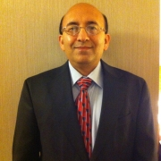

Click on a speaker's name to find their biography below.
Dr. Dan Arvizu
Director, National Renewable Energy Laboratory
Dr. Dan Arvizu is the Director of the National Renewable Energy Laboratory, the U.S. Department of Energy's primary laboratory for energy efficiency and renewable energy research and development. He was a chief technology officer with CH2M HILL Companies, Ltd., an executive with Sandia National Laboratories, and started his career at the AT&T Bell Telephone Laboratories.
In 2011, Dr. Arvizu was appointed by President Obama to a second six-year term on the National Science Board, the governing board of the National Science Foundation and the national science policy advisory body to the President and the Congress. He is presently serving as Chairman. Dr. Arvizu serves on a number of boards, panels and advisory committees including the American Council on Renewable Energy Advisory Board, the Singapore Energy International Advisory Panel, the Colorado Renewable Energy Authority Board of Directors, the Stanford Precourt Institute for Energy Advisory Council, and is Fellow of the National Academy of Public Administration.
He has a B.S. in mechanical engineering from New Mexico State University and a M.S. and Ph.D. in mechanical engineering from Stanford University.
He is scheduled to give one of Wednesday's keynote addresses.
Jeffrey Ball
Scholar-in-Residence, Stanford University
Jeffrey Ball is scholar-in-residence at Stanford University’s Steyer-Taylor Center for Energy Policy and Finance. He writes a New Republic column on energy and the environment, Resources, that appears biweekly at TNR.com. He came to Stanford in 2011 from The Wall Street Journal, where he was environment editor and spent more than decade writing about energy and the environment. Since then, his writing has been published by Foreign Affairs, The New Republic, Slate and The Wall Street Journal, among others. Stanford’s Steyer-Taylor Center is a joint initiative of the law and business schools. Ball heads a project exploring how China and the U.S. might deploy clean energy more economically efficiently if each played to its comparative advantages. The project focuses on the solar industry. Ball speaks often about energy and environmental issues, including as a Woodrow Wilson Visiting Fellow. He majored in history at Yale University. Follow him on Twitter @jeff_ball.
He is scheduled to moderate the headlining panel discussion, The SunShot Initiative: The Future is Bright.
Atiye Bayman
Chief Technology Officer, Miasole
Dr. Bayman joined MiaSolé in 2007 as Vice President of Process Technology leading conversion efficiency improvement through thin film deposition and device characterization programs. She was promoted to Chief Technology Officer in 2013 overseeing research and development programs at MiaSolé.
Prior to MiaSolé, Dr. Bayman worked in the semiconductor industry for 25 years in technology development programs for Novellus Systems, Synergy Semiconductor and Advanced Micro Devices.
Dr. Bayman holds a Ph.D. in solid state physics from the University of California, Santa Barbara and Bachelor of Science in physics from Middle East Technical University in Ankara, Turkey.
Bryan Bollinger
Assistant Professor of Marketing, New York University Stern School of Business
Bryan Bollinger is an Assistant Professor of Marketing at New York University Stern School of Business. Professor Bollinger’s research interests lie at the intersection of marketing, empirical industrial organization, and economic policy, and include technology adoption decisions by consumers and firms, demand and supply side spillover effects, and the effectiveness of marketing mix variables and policy tools in affecting consumer and firm behavior. Current research includes work on solar PV adoption, learning-by-doing in solar PV installations, green technology adoption by dry cleaning firms, heterogeneous effects of smart meter technologies, nutritional labeling, and multiple projects on advertising and pro-social marketing. Professor Bollinger received his BA and BE in engineering at Dartmouth College and his M.A. in Economics and Ph.D. in Marketing at Stanford University. He will be starting as an Assistant Professor of Marketing at Duke’s Fuqua School of Business in the summer of 2014.
Tonio Buonassisi
Associate Professor, MIT
Tonio Buonassisi received his Ph.D. in Applied Science & Technology at the University of California, Berkeley. He was a visiting researcher at the Fraunhofer Institute for Solar Energy Systems (ISE) and the Max-Planck Institute for Microstructure Physics, and a crystal growth research scientist at Evergreen Solar, Inc. He joined the faculty at the Massachusetts Institute of Technology in 2007, where he is currently an Associate Professor of Mechanical Engineering. He leads an interdisciplinary research group focused on crystalline silicon, Earth-abundant thin-films, and advanced-concept PV. He co-founded the Fraunhofer Center for Sustainable Energy Systems in Boston, MA.
John Candelaria
Policy Advisor, Nevada Public Utilities Commission
Mr. Candelaria is currently a Policy Advisor for the Nevada Public Utilities Commission and provides advice to Commissioners regarding resource planning, transmission planning, ratemaking, and other regulatory issues. He has 29 years of experience in the electric utility industry working for investor owned utilities, regulatory agencies and a consulting firm. He has provided technical advice to Nevada policy makers on market and transmission access issues for renewable resources in Nevada as a regulator and a in a consulting capacity; he spent over 21 years in utility regulation and eight years working for an investor owned utility (Tucson Electric Power and related companies) gaining experience in power production including construction, energization, operation and maintenance of utility scale power production facilities.
Mr. Candelaria co-authored a report entitled Western Grid 2050 (2011), prepared an economic feasibility assessment of solar resource areas in eastern Nevada for the Southern Nevada Water Authority (2011); prepared a report for the Nevada State Energy Office entitled: “Assessing Renewable Energy Export Opportunities and the Potential Benefits of Nevada/California Electricity Exchanges (December 2012). He was appointed to the Advisory Committee of the New Energy Industry Task Force by the Nevada Governor Sandoval ’s Energy Advisor, Stacey Crowley (2011).
Mr. Candelaria has a B.S in electrical engineering and an MBA, both from Arizona State University.
Jason Caudle
Deputy City Manager, City of Lancaster
Jason Caudle was appointed Deputy City Manager of the City of Lancaster in November 2008. During his tenure, Mr. Caudle has played an integral role in the development and implementation of several multi-scaled sustainable energy projects, as well as Lancaster’s award-winning downtown district, “The BLVD.” As Deputy City Manager, Caudle has overseen the formation of the Lancaster Power Authority (LPA) and the state-wide California Clean Energy Authority (CCEA). Working closely with City planners and solar developers, he continues to promote dynamic public-private partnerships on behalf of the City.
Previously, Mr. Caudle served as the Vice President of Public Finance for the Carlsbad-based investment banking firm, Kinsell, Newcomb & De Dios. In that position he was responsible for market and trend analysis, as well as the delivery of municipal securities.
Mr. Caudle holds a bachelor’s degree in Political Science and a Master’s degree in Public Policy and Administration, both from California State University Bakersfield (CSUB). He has also served as an Adjunct Faculty member of the Political Science Department at Bakersfield Community College. Currently Mr. Caudle is a member of the CSUB Public Policy Department Advisory Committee.
He is schedule to speak at the breakout session All Solar is Local.
Steven Chalk
Deputy Assistant Secretary for Renewable Energy, U.S. Department of Energy
In his role as Deputy Assistant Secretary for Renewable Energy in the Office of Energy Efficiency and Renewable Energy (EERE), Steven Chalk oversees applied research, development, and demonstration for a diverse clean energy portfolio. This portfolio spans wind, solar, geothermal, conventional hydropower, marine and hydrokinetic, biomass, and hydrogen technologies. Prior to his current position, Steve served as EERE's Chief Operating Officer and led EERE's Recovery Act implementation, which included $17 billion of awards, part of the nation's largest-ever investment in clean energy. Steve also supported the Treasury Department launch two new clean energy tax programs—the 1603 grants-in-lieu-of tax credits and the 48C advanced manufacturing tax credits, both of which contributed significantly to America's growing clean energy sector. During the previous Presidential transition period, he was the Principal Deputy Assistant Secretary and led EERE.
From 2007 through 2008, Steve also held the position of Deputy Assistant Secretary for Renewable Energy. He also previously managed EERE's Hydrogen and Fuel Cell Technologies Program, the Solar Energy Technologies Program, and the Buildings Technologies Program.
In September 2008, the Partnership for Public Service honored Steve with a Service to America Medal in the Science and Environment category. This award recognized his management of several innovative clean energy projects, as well as his leadership in the federal government's efforts to expand renewable energy and energy efficiency use, particularly in New Orleans, Louisiana, and Greensburg, Kansas. Steve has also received the Meritorious and Distinguished Presidential Rank Awards.
Early in his career at the Department of Energy (DOE), Steve managed technology development programs in fuel cells, diesel emissions control, and materials for DOE's advanced automotive technology office. He also worked in the nuclear energy field where he oversaw DOE test programs for tritium production. Steve started his career with the Navy developing propellants and explosives for conventional weapons.
He holds a Bachelor of Science in chemical engineering from the University of Maryland and a Master of Science in mechanical engineering from the George Washington University.
Craig Cornelius
Senior Vice President of Business Development, NRG Solar
Craig Cornelius is responsible for the origination of solar investment opportunities, the formation of new financing sources for distributed generation and utility markets and the formation of external partnerships in key strategic areas for NRG Solar. Prior to his tenure at NRG Solar, he served as a Managing Director at Hudson Clean Energy Partners, where he led investment activities in the firm’s solar investing practice. Previously, Cornelius was the Program Manager of the U.S. Department of Energy’s Solar Energy Technologies Office, where he led the creation of the $1.5 nillion Solar America Initiative. He also served terms at the U.S. National Aeronautics and Space Administration, the Geoinformatics and Space Technology Development Agency of Thailand, the U.S. National Academies of Science, Wexler & Walker Public Policy Associates and the Office of House Minority Leader Rep. Richard Gephardt.
Cornelius holds an A.B. from Princeton University in history of science with a concentration in aerospace engineering, an M.A. in science, technology and public policy from the George Washington University. He was a Henry Luce foundation Scholar and received the DOE’s Special Service Award for his work in creating the Solar America Initiative.
He is scheduled to serve as a panelist for The SunShot Initiative: The Future is Bright.
Brad Cox
Senior Managing Director, Trammell Crow Company
Brad Cox serves as Senior Managing Director for Trammell Crow Company where his primary focus is raising capital, setting investment strategy, creating deal flow, and overseeing the day-to-day activities for the Los Angeles Business Unit. Trammell Crow Company is a 64 year national development company, a wholly owned subsidiary of CBRE, with offices in 15 cities.
The Los Angeles division portfolio currently includes $400 M of in process development including 102 acres of industrial development in Los Angeles, Carson and La Verne, medical office buildings for USC, mixed use office in Downtown Los Angeles and Pasadena, and Multi-family developments in Santa Monica.
Brad is also responsible for overseeing a regional portfolio of 4.5 million square feet of premier office properties, including the landmark Century Plaza Towers, 2000 Avenue of the Stars in Century City and The Water Garden in Santa Monica.
Brad is the Chairman of the Santa Monica Alliance and the Incoming 2013 Chairman of the Santa Monica Chamber. He also serves as Chairman of the Los Angeles Business Council Institute.
Joseph Desmond
Senior Vice President of Marketing and Government Affairs, BrightSource Energy
Joseph Desmond is Senior Vice President of Marketing and Government Affairs for BrightSource Energy. Desmond brings almost three decades of private and public energy sector experience to his role at BrightSource Energy, where he oversees communications, marketing, and government and regulatory affairs. Prior to joining BrightSource Energy, Desmond served as Executive Vice President and Chief Marketing & Business Development Officer at Ice Energy, Inc. and Senior Vice President of External Affairs at NorthernStar Natural Gas. Desmond served numerous executive roles under California Governor Arnold Schwarzenegger including Deputy Secretary of Energy for the State Resources Agency, Chairman of the California Energy Commission and Undersecretary for Energy Affairs. Prior to public service, Desmond spent four years as President and Chief Executive Officer of Infotility, Inc. Previously, he served as President and Chief Executive Officer of Electronic Lighting, Inc., and Vice President of Parke Industries. He serves on the Board of Directors of the American Council On Renewable Energy (ACORE), and on the Board of Directors for the California Foundation on the Environment and the Economy (CFEE). In addition, he also serves on the Advisory Council of Stanford University’s Precourt Energy Efficiency Center. Desmond earned a B.S. in marketing, finance and management from Northeastern University where he graduated magna cum laude.
He is a panelist for the headlining panel The SunShot Initiative: The Future is Bright and a breakout session, Future of CSP: Challenges and Opportunities.
Francisco DeVries
President and CEO, Renewable Funding LLC
Renewable Funding is a finance company that provides innovative clean energy solutions to governments, utilities, and private sector clients in the United States and internationally. The firm administers all aspects of energy financing programs, builds technology systems to simplify program and consumer engagement, and delivers capital for energy improvements. Renewable Funding has provided services to over 200 state and local governments, including the States of California, Pennsylvania, Hawaii, and many others.
Previously, as Chief of Staff to the Mayor of Berkeley, he envisioned and led the initial development of the first Property Assessed Clean Energy Program (PACE) program, which allows property owners to pay for solar installations and energy efficiency projects as a line item on their property tax bill. DeVries also served as an appointee in the administration of President Bill Clinton, serving as an aide to the U.S. Secretary of Transportation and the U.S. Secretary of Energy.
Cristin Dorgelo
Assistant Director for Grand Challenges, White House Office of Science and Technology Policy
Cristin Dorgelo serves as Assistant Director for Grand Challenges with the White House Office of Science and Technology Policy (OSTP). At OSTP, Cristin works to increase the number of individuals and organizations pursuing 21st Century Grand Challenges – audacious yet achievable goals that harness science and technology to solve global and national problems. Cristin also works with Federal agencies to use inducement prizes to engage citizen solvers on Challenge.gov. Prior to joining OSTP, Cristin was Vice President of Prize Operations for the X PRIZE Foundation, a nonprofit prize institute whose mission is to create radical breakthroughs for the benefit of humanity. As part of the X PRIZE team from 2006 through early 2012, Cristin managed the X PRIZE Foundation’s competitions, including the Google Lunar X PRIZE, the Progressive Insurance Automotive X PRIZE, the Northrop Grumman Lunar Lander X CHALLENGE, and the Wendy Schmidt Oil Cleanup X CHALLENGE. Before joining the X PRIZE Foundation, Cristin was part of the founding team of X1 Technologies as Director of Operations, helping the desktop search company develop its innovative software and grow from 0 to 40 employees from 2002 to 2006. Prior her work at X1 Technologies, Cristin helped launch several startup companies, including Energy Innovations, Omnilux, and XBeams, at the Pasadena incubator Idealab. Cristin was part of the Leadership and Organizational Development group at Times Mirror before it was bought by Tribune Company in 2000. She started her career in Advertising Operations at the Los Angeles Times. Cristin holds a BA in History with a minor in Anthropology from UCLA.
Dr. Thomas Earnest
Global Market Development Manager, DuPont Photovoltaic Solutions
Tom Earnest, DuPont Photovoltaic Solutions Manager for Business Development, has been with DuPont for over 30 years, working in multiple strategic business units in a variety of technology, marketing, business and planning roles in Delaware, Pennsylvania and North Carolina. Tom has worked in the PV industry since 2004.
After receiving B.S. degrees in Textile Engineering and Chemistry from N.C. State University, Tom attended graduate school at the University of Massachusetts, receiving his M.S. degree in 1976 and Ph.D. in 1978, both in Polymer Science and Engineering. Prior to joining DuPont, he was a Visiting Scientist at Imperial College of Science and Technology, London, England.
Tom has two grown sons and lives in Wilmington, Delaware.
Dr. Karina Edmonds
Executive Director for Corporate Partnerships, California Institute of Technology
Dr. Karina Montilla Edmonds is a nationally recognized expert in the field of innovation, technology transfer and commercialization with extensive experience working with the private sector, universities and national laboratories across the country in the innovation space. Dr. Edmonds was appointed Technology Transfer Coordinator for the U.S. Department of Energy (DOE) in April 2010 by Secretary of Energy Dr. Steven Chu. Her position was created by the Energy Policy Act of 2005 and her appointment was the first time that the Department appointed a full-time person to fill this role. Dr. Edmonds was responsible for working with the DOE’s National Laboratories to accelerate the process of moving discoveries from the laboratory to the marketplace, ensuring that America’s scientific leadership translates into new, high-paying jobs for America’s families. After completion of a three-year appointment with DOE, Dr. Edmonds returned to the California Institute of Technology (Caltech) where she now serves as the Executive Director for Corporate Partnerships in the Office of Technology Transfer and Corporate Partnerships. She is responsible for implementing and managing an integrated strategy that transcends the Office of the Vice Provost of Research and attendant research portfolio supporting Caltech’s long-range strategies and interests involving the private sector and major Federal government funding agencies. Dr. Edmonds received a bachelor’s degree in mechanical engineering from the University of Rhode Island, where she was inducted into their Engineering Hall of Fame in 2011. She holds master’s and doctorate degrees in aeronautics with a minor in material science from the Caltech.
Dr. Abraham Ellis
Lead for PV Systems Integration, Sandia National Laboratories
Dr. Abraham "Abe" Ellis recently joined Sandia's Solar Systems Department, where he serves as technical lead for PV systems integration activities. Previously, Abraham worked at Public Service Company of New Mexico for seven years, where he was manager of transmission planning. In that capacity, Abraham had responsibility for interconnection studies for large generators.
Currently, he serves as Chairman of the WECC Wind Modeling Group and IEEE Dynamic Performance of Wind Generation Working Group. Abraham is a Senior Member of IEEE and a registered Professional Engineer in New Mexico
Abe obtained a PhD in Electrical Engineering (Power Systems) from New Mexico State University in 2001.
Dr. David Danielson
Assistant Secretary for Energy Efficiency and Renewable Energy, U.S. Department of Energy
Dr. David Danielson leads the Office of Energy Efficiency and Renewable Energy (EERE) within the U.S. Department of Energy (DOE). As Assistant Secretary, he oversees a broad energy portfolio that is intended to hasten the transition to a clean energy economy. Previously, he was the first Program Director hired by DOE's Advanced Research Projects Agency-Energy (ARPA-E). At ARPA-E, he developed and led R&D programs with a budget of more than $100 million that focused on high-risk, high-reward, disruptive clean energy technologies. Prior to joining ARPA-E, he was a clean energy venture capitalist at General Catalyst Partners, a Boston-based venture capital fund. He co-founded the firm's clean energy investment practice and helped build and grow startups in various clean energy technology areas including solar power, wind power, advanced biofuels, bio-gas, carbon capture and storage, and advanced lighting.
He was a co-founder of the New England Clean Energy Council. He has authored more than 20 scientific articles in the field of advanced materials. While at the Massachusetts Institute of Technology (MIT), he was the founder and President of the MIT Energy Club and a founding Director of the MIT Energy Conference. For his work in building a strong multidisciplinary energy community at MIT, he was awarded the Karl Taylor Compton Prize, MIT's highest student award. He holds a Bachelor of Science, summa cum laude, in Materials Science and Engineering from the University of California, Berkeley, and a Ph.D. in Materials Science and Engineering from the Massachusetts Institute of Technology.
He is scheduled to give Wednesday's keynote address.
Linda J. Fisher
Vice President and Chief Sustainability Officer, DuPont Safety, Health & Environment
Linda J. Fisher is Vice President – DuPont Safety, Health & Environment and chief sustainability officer. She has responsibility for advancing DuPont's progress in achieving sustainable growth; DuPont safety, health and environmental programs; the company's global product stewardship and regulatory affairs program and corporate philanthropy. She joined DuPont in July 2004.
Prior to joining DuPont, Ms. Fisher has served in a number of key leadership positions in government and industry including: Deputy Administrator of U.S. EPA; U.S. EPA Assistant Administrator - Office of Prevention, Pesticides and Toxic Substances; U.S. EPA Assistant Administrator - Office of Policy, Planning and Evaluation; and Chief of Staff to the U.S. EPA Administrator. Fisher, an attorney, was also Vice President of Government Affairs for Monsanto and was "Of Counsel" with the law firm, Latham & Watkins.
Ms. Fisher received a law degree from Ohio State University, a Master's of Business Administration from George Washington University and a B.A. from Miami University. Ms. Fisher serves as liaison to the Environmental Policy Committee of the DuPont board of directors. She serves on the board of directors of the Covanta Holding Corporation and the boards of several non-profit organizations.
She is scheduled to serve as a panelist for The SunShot Initiative: The Future is Bright.
Ben Foster
Senior Vice President, Optony, Inc.
Ben Foster is the Senior Vice President for Optony Inc., a leading international provider of clean energy project management services for the commercial, government, and financial sectors. He is responsible for driving positive change for the environment while enabling clients to achieve long-term value while lowering project risk. As an industry leader, Ben has been recognized for his efforts to develop and deploy best practices in renewable energy across the United States and in China and written industry whitepapers, training materials and best practice guides. He is an invited speaker for the US EPA, Department of Energy, UC Berkeley, Denver University, Peking University, China’s NDRC and NEA, and many others.
Ben has a Bachelor’s degree in Finance and Accounting from the University of Colorado, Boulder and an MBA in International Business from Old Dominion University. He holds designations of Certified Management Accountant (CMA) and Certified Financial Manager (CFM). He is currently on the Board of Directors for Joint Venture: Silicon Valley, and on the Task Force on Clean Energy and Bond Finance.
Aaron Fyke
President, Edisun, Inc.
Aaron Fyke has spent nineteen years building successful energy companies across a number of technology areas including fuel cell, ocean power, concentrating solar, advanced automotive engines, and energy storage technologies. He has deep experience as an operating executive, investor, and engineer.
He is currently President of Edisun Heliostats, a technology company committed to lowering the costs of solar thermal power. His prior efforts included being the founder and CEO of Energy Cache, a low-cost grid scale energy storage technology company, serving a multi-billion dollar energy market. He has attracted the attention of media and investors with the success of their 50 kW demonstration prototype.
Previously he headed up the development of a $10m X PRIZE in Energy for the X PRIZE Foundation, and was a Partner at Starfish Ventures, Australia’s largest venture capital firm.
Aaron earned his MBA and MSME from the LGO program at MIT, and his BEng in Mechanical Engineering from the University of Victoria, where he received the Canadian Society for Mechanical Engineering Gold Medal for graduating at the top of his class. He has achieved certification as a Professional Engineer in Mechanical Engineering both in California and British Columbia.
Raffi Garabedian
Chief Technology Officer, First Solar
Raffi Garabedian joined First Solar in 2008 as Director of Disruptive Technologies, and was promoted to Vice President of Advanced Technologies in 2010, overseeing the company’s advanced research and development operations in Santa Clara, California, and was promoted to Chief Technology Officer in May 2012. Prior to joining First Solar, he was founder and CEO of Touchdown Technologies, a semiconductor test equipment company. Prior to that, Mr. Garabedian worked in the semiconductor and microelectromechanical systems industries for over 15 years, developing new products ranging from automotive sensors to telecommunications switching systems, and holds more than 20 issued patents in these fields.
Mr. Garabedian earned a BSEE degree from Rensselaer Polytechnic University and an MSEE degree from the University of California at Davis.
He is scheduled to give Tuesday's keynote address, entitled Future Vision.
Charlie Gay
Founder, Managing Director, Greenstar Foundation
Dr. Gay established the Greenstar Foundation in 1997 to deliver solar power and internet access for health, education and microenterprise projects to developing world villages. Greenstar has been recognized for its innovation by the World Bank, the Stockholm Challenge, the Technology Empowerment Network and the Tech Museum Awards.
Dr. Gay began his career in 1975 designing solar power system components for communications satellites at Spectrolab, Inc. and later joined ARCO Solar, where he established the research and development program and led commercialization of crystalline silicon photovoltaics. In 1990, Dr. Gay became president and chief operating officer of Siemens Solar Industries. From 1994 to 1997, he served as NREL director. In 1997, Dr. Gay was president and chief executive officer of ASE Americas, Inc., and in 2001 became chairman of the technical advisory board at SunPower Corporation. He joined Applied Materials in 2006 as corporate vice president and general manager of the Solar Business Group. In 2009 he was named president of Applied Solar and chairman of the Applied Solar Council at Applied Materials, Inc. He holds numerous patents for solar cell and panel construction and is the recipient of the Gold Medal for Achievement from the World Renewable Energy Congress.
Dr. Gay has a doctorate degree in physical chemistry from the University of California, Riverside. In February 2013 he was elected to the U.S. National Academy of Engineering for his seminal leadership contributions to the development of the global solar PV industry.
Melanie J. Gnazzo
Partner, Asset Securitization, Lease Finance and Tax, Chapman and Cutler LLP
Melanie Gnazzo is a partner in the Asset Securitization, Lease Finance and Tax practice groups. Melanie represents a wide range of finance companies and funding sources engaged in structured finance and securitization transactions, as well as in portfolio acquisitions, dispositions, restructurings and joint ventures involving financial assets. She also provides advice with respect to tax advantaged financial and renewable energy products and investment vehicles. She has considerable experience providing both tax and commercial law advice in such transactions. Melanie is a regular speaker at industry forums on tax, leasing and securitization matters and is co-chair legal subcommittee of the Solar Access to Public Capital (SAPC) task force.
Ethan A. Good
Director, Solar Materials Research and Development, SunEdison
Dr. Ethan A. Good is the Solar Materials Research and Development Director at SunEdison, a global leader in delivering intelligent energy solutions. At SunEdison, Ethan is responsible for cultivating and executing technology programs within an expertise-rich network of scientists and engineers aimed at delivering innovative photovoltaic applications. He received degrees in silicon metallurgy, electronic materials and solid-state physics from the Colorado School of Mines. After finishing his research fellowship at the National Renewable Energy Laboratory in the crystalline silicon materials group, he helped found Solar Power Industries in Pittsburgh Pennsylvania. Beginning in 2006, Dr. Good worked for the Dow Corning Corporation, where he led product development and research into silicon feedstock purification, novel crystal growth methods, and advanced dielectric coatings. Then before assuming his current role at SunEdison, Ethan headed the research and development efforts at SolarWorld USA, where a portfolio of projects in crystallization, device fabrication, and module prototyping helped to launch an integrated manufacturing operation at nearly 500 Megawatt (peak) per annum.
Dena Gromet
Postdoctoral Research Fellow, Risk Management and Decision Processes Center, The Wharton School, University of Pennsylvania
Dr. Dena Gromet is a Postdoctoral Research Fellow with the Risk Management and Decision Processes Center at The Wharton School (University of Pennsylvania). Her research is primarily concerned with investigating how salient situational features and people’s personal values affect their choices and judgments across a range of policy-relevant domains. These domains include energy decisions and reactions to climate change, risk-taking and risk-preparedness, and responses to harms and injustices. Dena has investigated how individuals’ values affect their adoption of energy-saving measures, their evaluation of investment decisions and wealth redistribution, and their preferences for retributive and reparative responses to wrongdoing. She has also examined how the salience of victim and brain-based information affects justice outcomes. Her research has been published in a number of peer-reviewed journals and book chapters. Dena received her B.A. in Psychology from the University of Pennsylvania, and her Ph.D. in Psychology from Princeton University. She also was a Summer Associate at the Rand Corporation, and a Postdoctoral Fellow for the MacArthur Foundation Law and Neuroscience Project.
Jenn Gustetic
Program Executive for Prizes and Challenges, National Aeronautics and Space Administration
Ms. Gustetic’s experience has focused on the public sector with concentrations on prizes and challenges, open government, innovation, public private partnerships, grants management, and technology policy. Currently, Ms. Gustetic is the Prizes and Challenges Program Executive in the Office of the Chief Technologist at NASA Headquarters in Washington DC. In this leadership and strategy role, Ms. Gustetic coordinates the use of challenge-driven open innovation methods, such as prize competitions and crowdsourcing, at NASA. Ms. Gustetic also leads NASA’s formulation efforts for its Grand Challenges, most recently resulting in the announcement in June 2013 of a new Grand Challenge to “find all asteroid threats to human populations and know what to do about them”.
She holds a bachelor’s degree in aerospace engineering from the University of Florida and a master’s degree in technology policy from the Massachusetts Institute of Technology.
Sarah Ham
Associate, DBL Investors
Sarah Ham is an Associate at DBL Investors, which she joined in 2011. Sarah sources and performs diligence on investment opportunities, advises portfolio company management, and helps portfolio companies implement their double bottom line practices. Sarah was a Summer Associate with DBL Investors in 2010 in which she researched industry trends and performed due diligence on investment opportunities. Sarah graduated from the Yale School of Management in 2011. At Yale SOM, Sarah focused on entrepreneurship in developing markets, social innovation and investments. She led the design of and chaired the inaugural Yale SOM Education Business Plan Competition. Prior to Yale, Sarah was the finance director for a congressional campaign and a market¬ing consultant with the Market Bridge Corporation. Sarah received her BA from Stanford University.
Garvin Heath
Senior Scientist, Strategic Energy Analysis Center, National Renewable Energy Laboratory
Garvin Heath is a senior scientist in the Strategic Energy Analysis Center of the National Renewable Energy Laboratory. At NREL he specializes in analyzing the environmental impacts of energy systems using the tools of life cycle assessment, air quality modeling and sustainability analysis. Recent projects include life cycle assessment of methane emissions from natural gas systems (with interviews or webcasts); LCAs of concentrating solar power systems (1, 2); meta-analysis of LCAs for coal, natural gas, nuclear, wind, PV, and CSP; inventories of air pollutant emissions from the life cycle of biofuels; meta-analysis of life cycle water use by power generation technologies; land use by solar, geothermal and natural gas systems; and environmental externalities from biofuels and electric power system futures. (video review of GHG, water and land use)
He received his PhD in Energy and Resources from the Energy and Resources Group of the University of California Berkeley. He also holds an MS degree in Environmental Engineering from UC Berkeley. His previous professional experience includes service as an environmental engineer at the US EPA, in addition to various assignments with researchers at Lawrence Berkeley National Laboratory and Environmental Defense Fund. He currently resides in Boulder, CO where he also holds an adjunct research position at the University of Colorado at Boulder. He can be contacted at Garvin.Heath@nrel.gov.
Cliff Ho
Distinguished Member of the Technical Staff, Sandia National Laboratories
Cliff Ho is a Distinguished Member of the Technical Staff at Sandia National Laboratories, where he has worked since 1993 on problems involving concentrating solar power, water safety and sustainability, heat- and mass-transfer processes in porous media, and microchemical sensor systems for environmental monitoring.
Dr. Ho has authored nearly 200 scientific papers, in addition to 8 patents and several book chapters. Dr. Ho served as an Adjunct Professor from 1996 to 2003 in the Department of Mechanical Engineering and the Department of Earth and Planetary Sciences at the University of New Mexico, and he received an Outstanding Professor Award in 1997. In 2010, Dr. Ho was awarded the national Asian American Engineer of the Year Award, and in 2013, he won an R&D 100 Award for his development of a design-optimization and glare-analysis software tool for solar photovoltaic systems. In 2008, Dr. Ho won Discover Magazine’s “Future of Energy in Two Minutes or Less Video Contest,” and he donated the $5,000 winnings to his daughters’ elementary school to start its first Green Team.
Dr. Ho received his B.S. in Mechanical Engineering from the University of Wisconsin–Madison in 1989, and his M.S. and Ph.D. degrees in Mechanical Engineering from the University of California at Berkeley in 1990 and 1993.
Bert Hunter
Chief Investment Officer, Clean Energy Finance and Investment Authority
As Chief Investment Officer of CEFIA, Bert will lead the development of new and innovative financing programs. These programs will scale-up the state’s clean energy investments in commercially viable technologies.
Bert was Vice President of Finance and Chief Financial Officer of Spectrum Capital, Ltd, an investment bank focused on commercial aircraft finance and investment in US electric power generation. He was accountable for all financial control and served as the company’s senior risk officer, overseeing all extensions of credit and investment of the firm’s capital. Prior to Spectrum, Bert was the treasurer of the international leasing company of Chemical Bank where he managed the funding for a billion-dollar portfolio of aircraft and equipment loans and leases outside the United States.
A native of Washington DC, Bert is an alumnus, former Trustee and former member of the Board of Visitors of Wake Forest University (BS) and received his MBA from The Wharton School at the University of Pennsylvania.
J. Craig Hunter
Co-Founder and Managing Director, Innoscovery
Over the past 12 years, Craig has been responsible for launching multiple new technology products and initiatives, first with Applied Materials and then with Intermolecular. He recently co-founded Innoscovery with partner Scott Thomsen (former President of Guardian Glass) to help companies develop and commercialize innovative technologies, primarily in materials science-intensive industries including PV.
At Applied Materials, Craig was the founding GM of the Thin Film Solar Group and led SunFab from its conception in 2005 through manufacturing of first panels. He joined Sequoia Capital in 2008 as an entrepreneur-in-residence focused on clean energy technologies, and later joined Intermolecular (NASDAQ:IMI) to establish and lead that company’s clean energy technology group. In the PV arena, IMI partnered with manufacturers to accelerate R&D in both crystalline and thin film solar cell technologies. First Solar and IMI have been working together since 2012 to accelerate R&D on high efficiency CdTe.
Some of Mr. Hunter’s previous roles included: Sr. Manager for the E-beam Test (EBT) and PVD products of AKT, Inc. (the display subsidiary of Applied Materials), CFO of Evercare Corp., and director of M&A at The Beacon Group.
Mr. Hunter received a B.A. in East Asian Studies from Harvard College and graduated with high distinction from Harvard Business School.
Mark Johnson
Director, Advanced Manufacturing Office, Office of Energy Efficiency and Renewable Energy, U.S. Department of Energy
Mark Johnson has joined Energy Efficiency and Renewable Energy as Director of the Advanced Manufacturing Office (AMO). Previously, Mark has been a Program Director in the Advanced Research Projects Agency – Energy (ARPA-E) where he had been the longest serving Program Director, having been with ARPA-E from its first year of formation in 2010 until mid-2013. While at ARPA-E, Mark had started initiatives on areas of energy storage and critical materials, as well as projects in small business, advanced semiconductor, novel wind architectures, superconductors and electric machines.
Mark joins EERE on assignment from North Carolina State University, where he is an Associate Professor of Materials Science and Engineering. His prior research has focused on the research and development compound semiconductor materials and devices for electronic and photonic applications. In attrition, Mark taught in the Technology, Entrepreneurship and Commercialization program jointly between the NC State Colleges of Management and Engineering. In addition to his academic career, Mark has been an entrepreneur as founder or key early stage leader in Quantum Epitaxial Designs (now International Quantum Epitaxy) in Pennsylvania, EPI Systems (now Veeco) and Nitronex (now GaAs Labs). Mark has a bachelor’s degree from MIT and a PH.D., from NC State, both in Materials Science and Engineering.
Shayle Kann
Senior Vice President, GTM Research
Shayle Kann directs GTM Research, the market analysis, advisory and consulting division of Greentech Media. Shayle manages the full research program and analyst team with responsibility for strategy, business development, and product development. An expert on solar markets, he has presented at conferences around the world, been featured in publications such as The Economist, New York Times, Wall Street Journal, Washington Post, Forbes, Bloomberg, Reuters, and Financial Times, and spoken at Harvard, Yale, MIT and Columbia. He has also testified in front of the U.S. House of Representatives Natural Resources Committee on the state and future of the U.S. solar market. Prior to joining GTM, Shayle was a U.S. Fulbright Scholar in Australia, studying the impacts of the global financial crisis on wind project finance. He has a Bachelor’s cum laude, phi beta kappa from Pomona College.
Michael Kearney
Principal, Ambri
Michael Kearney is a Principal on the Corporate Development team at Ambri. As its first full-time employee in April 2011, Michael helped build Ambri’s corporate infrastructure, managing finance, human resources, marketing and business development. Today, Michael primarily focuses on establishing and executing Ambri’s go-to-market strategy.
Prior to Ambri, Michael received a Master of Science from MIT where he studied energy economics in the technology and policy program. He also holds a Bachelor of Arts in mathematics and political science from Williams College, where he was also the captain of the men’s basketball team.
Dr. Kevin R. Lang
Director, Solar Generation, Leidos Engineering
Kevin R. Lang, Ph.D., leads the Independent Engineering practice for solar power generation and technology at Leidos Engineering, LLC, formerly part of SAIC. He offers more than seven years of experience with a focus on solar technology, performance, and project management, as well as evaluation of new energy technologies. Since joining the firm in 2009, Dr. Lang has been extensively involved in photovoltaic (PV) projects and technology reviews, and he has emerged as a trusted authority on all solar matters for the firm. Dr. Lang has been involved in more than 100 different solar projects and technology reviews since joining Leidos, including some of the world’s most notable solar power projects. He holds a Ph.D., S.M., and S.B. in Mechanical Engineering, each from the Massachusetts Institute of Technology.
Mary Leslie
President, Los Angeles Business Council
Mary Leslie is president of the Los Angeles Business Council (LABC), one of the most respected business advocacy organizations in California. Under her leadership, the LABC has developed a national reputation as a catalyst for innovative policy in the fields of housing, transportation, renewable energy development, CleanTech and more. Most recently, the LABC led a citywide coalition to support the creation of the CLEAN LA Solar feed-in tariff program, the largest rooftop solar buyback program in the United States.
Prior to leading the LABC, Ms. Leslie served as a Deputy Mayor under Richard Riordan and held a senior position under Erskine Bowles in the Small Business Administration in Washington, D.C. A graduate of Santa Clara University, she holds a Master’s degree in public policy from the University of Southern California and an executive certificate from the UCLA Anderson School of Business.
Dr. Cheryl Martin
Acting Director, Advanced Research Projects Agency-Energy
Dr. Cheryl Martin is the Acting Director of the Advanced Research Projects Agency–Energy (ARPA-E) responsible for oversight of the Agency. Additionally, Dr. Martin leads ARPA-E’s Technology-to-Market program, which helps breakthrough energy technologies succeed in the marketplace. Prior to joining ARPA-E, Dr. Martin was an Executive in Residence with Kleiner Perkins Caufield and Byers, a venture capital firm based in Menlo Park, California.
Dr. Martin also spent 20 years with Rohm and Haas Company, starting her career as a Senior Scientist for the company’s Plastics Additives business and then holding various research and marketing roles in the Plastics Additives and Coatings businesses. In 2000, Dr. Martin was named Director, Investor Relations where she was responsible for Rohm and Haas’ interactions and relationships with the investment community. She later became Director, Financial Planning, and took on the responsibility for the planning, forecasting and management reporting activities of the company. Dr. Martin was named General Manager of the company’s Adhesives and Sealants business in North America in 2007 and also elected a Corporate Vice President. Most recently Cheryl had been the General Manager for the Paint and Coatings Materials business in Europe, Middle East and Africa. In this role, she was responsible for all aspects (technology, operations, sales and marketing) of the business in this region.
Dr. Martin earned a B.A. degree in chemistry from the College of the Holy Cross. She went on to earn a Ph.D. in organic chemistry from the Massachusetts Institute of Technology (MIT). She is active in the American Chemical Society (ACS) at both the local and national levels and serves on the Board of Directors for Philabundance, the greater Philadelphia region’s largest hunger relief organization.
Dr. Martin is giving brief remarks during the Women in Solar Networking Breakfast.
Buck Martinez
Senior Director Project Development, Florida Power & Light
J.L. “Buck” Martinez oversees the Office of Clean Energy at Florida Power & Light, a subsidiary of NextEra Energy, where his responsibilities include identifying and originating clean energy opportunities in the state to promote visibility, commitment, and economic development. Most recently, Mr. Martinez led the Company’s efforts in the development of three large solar projects and three large combined cycle natural gas facilities. Mr. Martinez joined Florida Power & Light in 1981. Prior to being named to his present position, he served as Senior Director of Project Development in the state. Before that he served as Director of Human Resource Services overseeing the corporate safety department, labor relations, and the corporate quality program
Mr. Martinez holds a Bachelor of Arts degree from St. Thomas University and a Master of Business Administration degree from Nova Southeast.
Mr. Martinez serves as the Chairman of the Florida Solar Energy Center and also serves on other Advisory Boards throughout the State, most notably The Florida Energy Systems Consortium, The Florida Research Consortium (FRC), and The St. Thomas University President’s Advisory Board. He and his wife Silvia, their three children and four grandchildren, live in Palm Beach Gardens, Florida.
Brad Mattson
Chief Executive Officer, Siva Power
Brad Mattson is Chief Executive Officer (CEO) of Siva Power, an advanced solar technology company based in Silicon Valley. He joined Siva Power in 2011, bringing together a world-class team focused on making CIGS thin film technology and manufacturing the foundation of the Gigawatt Era in solar.
Mattson is a renowned entrepreneur from the semiconductor industry and began his career at Applied Materials. He later founded and scaled both Novellus and Mattson Technology, to date, the only founder of two publicly-traded semiconductor equipment firms. Novellus was acquired for $3.3 billion. Immediately prior to Siva Power, Mattson was a venture partner for Vantage Point Capital Partners, where he focused on renewable energy, in particular solar.
Mattson has been listed as one of the top 50 most influential people in the semiconductor industry. He has also received the Entrepreneur of the Year Award from Ernst & Young, the Distinguished Alumni Award from San Jose State University and the Founders Award for Innovation and Entrepreneurship from Santa Clara University.
Nicholas Melosh
Professor of Materials Science & Engineering, Stanford University
Professor Melosh received his B.S. degree in chemistry from Harvey Mudd College in 1996, then went on to do a Ph.D. in materials science at UC Santa Barbara working with Brad Chmelka, Galen Stucky, and Glenn Fredrickson. He then went to UCLA/Caltech to work with Professor Jim Heath as a post-doc from 2001-2003, and became an Assistant Professor of Materials Science and Engineering at Stanford University in 2003. Professor Melosh's interests include energy conversion and interfacing electronics with biology. He is a Terman Fellow and Reid and Polly Anderson Faculty Scholar at Stanford University.
Kris Mayes
Professor, Arizona State University
Kris Mayes is the Founding Faculty Director of the Program on Law and Sustainability at Arizona State University’s Sandra Day O’Connor College of Law and is a member of the faculty at ASU’s Global Institute of Sustainability.
Mayes served as an Arizona Corporation Commissioner from 2003 to 2010, where she was also Chairperson for two years. During her tenure at the ACC, Mayes co-authored Arizona’s Renewable Energy Standard, and was a driving force behind the Commission’s adoption of one of the nation’s most ambitious Electric Energy Efficiency Standards. Mayes also helped establish one of the most ambitious energy efficiency standards in the nation, requiring utilities to sell 22 percent less energy by 2010 than they would have under current forecasts.
She is scheduled to serve as a panelist for The SunShot Initiative: The Future is Bright.
Michael Mendelsohn
Senior Financial Analyst, National Renewable Energy Laboratory
Mr. Mendelsohn has over 20 years of experience in the energy industry. He is currently a Senior Financial Analyst with the National Renewable Energy Lab where he organizes the solar industry to improve access to capital and evaluates financing innovations and policies designed to spur private investment in renewable energy. Prior to joining NREL, Mr. Mendelsohn was an economist with the Massachusetts DPU and an executive consultant for Levitan & Associates located in Boston. Mr. Mendelsohn holds a B.A. in Computer Science from Ithaca College and a M.S. in Energy Management and Policy from the University of Pennsylvania.
Tim Newell
Vice President of Financial Products, Solar City
Tim Newell is leading a new SolarCity initiative to provide a broad range of investors – including individuals – with access to innovative financial products backed by SolarCity’s growing pool of solar assets. Mr. Newell joined SolarCity’s management team in December 2013 following SolarCity’s acquisition of Common Assets, a financial technology company where Mr. Newell had been a founder and CEO. As CEO of Common Assets, Mr. Newell led the development of a financial platform designed to allow a wide array of individual and institutional investors to participate in financing renewable energy projects. Between 2009 and 2013, Mr. Newell also served as a Senior Advisor for US Renewables Group, a private equity firm focused on investments in renewable energy companies that was the founding investor in Common Assets. Prior to his investment career, Mr. Newell served in a number of positions in the U.S. government, most recently as Deputy Director for Policy in the White House Office of Science and Technology Policy under the Clinton Administration. Mr. Newell received a BA in Economics from Brown University.
Billy Parish
Founder and President, Mosaic
Billy Parish is Founder and President of Mosaic, a marketplace for clean energy investing that was recently named one of the world’s 10 most innovative companies in energy by Fast Company. In 2002, he dropped out of Yale to found the Energy Action Coalition and grew it into the largest youth clean energy organization in the world with over 300,000 members. He was lead architect of the Clean Energy Corps proposal to create 5 million new green jobs, which was incorporated into the American Recovery and Reinvestment Act and also expanded AmeriCorps with a new “Clean Energy Service Corps”. He has been honored as a Rolling Stone magazine “Climate Hero,” and was elected as a Fellow by Ashoka, the global association of the world's leading social entrepreneurs. His book Making Good: Finding Meaning, Money & Community in a Changing World was an Amazon bestseller. He lives in Oakland, CA, with his wife and two daughters.
He is scheduled to give a keynote address on Tuesday morning.
David Parsons
Economist, Hawaii Public Utilities Commission
David Parsons is an economist at the Hawaii Public Utilities Commission, where he is responsible for policy analysis and strategic planning for achievement of the state’s aggressive clean energy goals. He oversees the design and implementation of demand-side management programs, renewable energy procurement incentives, and distributed energy resources integration solutions. David also manages financial and economic evaluation of regulated utility investments and operations in the electric, gas, water, telecommunications, and transportation sectors. He holds an A.B. in economics and environmental studies from Bowdoin College and an M.E.M. in energy systems economics and natural resource management from Yale University.

The Honorable Scott Peters (CA-52)
U.S. House of Representatives
Congressman Scott Peters serves California’s 52nd Congressional District, which includes the cities of Coronado, Poway and most of northern San Diego. First elected in 2012, he currently serves on the House committees on Armed Services & on Science, Space, & Technology Committee.
Scott Peters is a civic leader who has made improving the quality of life in San Diego his life’s work. After a 15-year career as an environmental lawyer, Scott was elected to the San Diego City Council, where he later became the City’s first City Council President. On the Council, Scott helped lead the $2 billion redevelopment of downtown San Diego, the cleanup of the city’s beaches and bays, and the completion of a number of major infrastructure projects. He also pursued greater accountability and efficiency in government through the creation of a new Council/Mayor form of government with an independent budget review function.
In 2001, the governor appointed Scott to the Commission on Tax Policy in the New Economy, and in 2002, the Speaker of the Assembly appointed Scott to the California Coastal Commission.
Scott also later served as chairman of the San Diego Unified Port District – a major economic engine that supports over 40,000 high-skill, high-wage jobs for San Diegans, with $3.3 billion in direct regional economic impact.
Scott earned his undergraduate degree from Duke University (magna cum laude, Phi Beta Kappa) and worked as an economist for the United States Environmental Protection Agency before attending New York University School of Law. He and his wife of 27 years reside in the La Jolla neighborhood of San Diego, California, where they raised their son and daughter.
Scott Peters, listed by National Journal in 2013 as the fourth most independent Democrat in Congress, is a problem solver with a record of bringing people together to get results.
Joshua Posamentier
Principal, Prelude Ventures
Joshua Posamentier is a Principal with Prelude Ventures, joining in 2012 after a successful career as an operating executive and engineer in which he brought to market products in wireless, optics, and energy management sectors. He is focused on disruptive alternative energy companies, actively helping them grow and succeed.
Before Prelude Ventures, Joshua built up National Semiconductor’s Battery Management, Electric Vehicle, and Smart Grid business units and helped craft the company’s corporate cleantech strategy. Texas Instruments acquired National in 2011.
He serves on the board of directors for Heliotrope and also works with RidePal, SolarBridge, Quantumscape, Aquion, and Yerdle. Joshua has over 50 patents issued or pending and holds a BA in physics from the University California at Berkeley and MBAs from the Columbia Business School and the Haas School of Business.
Hank Price
Chief Technology Officer, Abengoa Solar
Henry Price is CTO for Abengoa Solar. He supports the development and operation of Abengoa's U.S. solar thermal electric power plants and helps coordinate all of Abengoa's research in solar technologies. Prior to working for Abengoa, he was a senior systems analyst at the National Renewable Energy Laboratory and the parabolic trough technology manager for the U.S. Department of Energy. He was the performance engineer for Luz Engineering Corporation during the development of the SEGS parabolic trough solar power plants.
He is scheduled to serve as a panelist for Future of CSP: Challenges and Opportunities and Solar as a Base Load Power Source.
Varun Rai
Assistant Professor, LBJ School of Public Affairs, University of Texas at Austin
Varun Rai is an Assistant Professor at the LBJ School of Public Affairs at the University of Texas at Austin, where he directs the Energy Systems Transformation Research Group. Prior to joining UT Austin he was a postdoctoral research fellow at the Program on Energy and Sustainable Development (PESD) at Stanford University. He studies technological change in energy, with a focus on the barriers in the energy innovation-diffusion process. His research combines energy systems modeling with the political economy of energy markets to understand how changes in energy technologies, market conditions, policies and regulation, and environment could impact energy generation. He has presented at United States Senate Briefings, Global Economic Symposium, and Climate One at Commonwealth Club. Among others, his research has been discussed in The New York Times, The Wall Street Journal, Washington Post, and Bloomberg News. He was a Global Economic Fellow in 2009 and a Salzburg Global Seminar Fellow in 2008. Since 2010 he holds the Elspeth Rostow Centennial Fellowship. Dr. Rai received his Ph.D. and M.S. in mechanical engineering from Stanford with specialization in energy systems and technologies. He holds a Bachelor's degree in mechanical engineering from the Indian Institute of Technology (IIT) Kharagpur.

Sukhwant Raju
Director of Recycling, First Solar
Sukhwant Raju is First Solar’s Global director of Recycling Operations & Services. He manages the company’s recycling operations and technology development. He is a chemical engineer with an Executive MBA degree from David Eccles School of Business at University Of Utah. With 28 years of experience in the chemical and environmental industry, he has been involved in the technical design, operations, and business management of chemical treatment, recycling, and hazardous waste management operations at several companies.
He strongly believes in taking a hands-on approach to his business activities and has played an integral role in developing new technology processes. Some of these achievements include the development of new herbicides in India, new chemical detoxification processes in North America, and the development of mobile incineration units to treat soils contaminated with live ammunitions. He has managed hazardous waste recycling operations to treat and recycle PCB contaminated equipment. He has also managed the hazardous waste disposal operations to safely treat and dispose of chemical weapons as part of an international treaty to reduce chemical weapons.
At First Solar, he leads the development of PV module recycling technology and manages a global recycling team, which currently operates commercial scale recycling plants in Europe, Asia, and the United States.
His overall technical background and experience in international operations in the environmental industry provides a unique and expert perspective on today’s topic of discussion.
Dr. Ramamoorthy Ramesh
Deputy Director for Science and Technology, Oak Ridge National Laboratory
Dr. Ramamoorthy Ramesh joined Oak Ridge National Laboratory (ORNL) as Deputy Director for Science and Technology in June 2013. Ramesh oversees one of the nation’s largest research and development programs, with annual expenditures of $1.4 billion in materials and physical sciences, energy and engineering sciences, computing and computational sciences, biological and environmental sciences, neutron sciences, and global security. Prior to his present appointment, he was the Plato Malozemoff Chair Professor of Materials Science and Engineering and Physics at the University of California, Berkeley, with a joint appointment as a faculty senior scientist at Lawrence Berkeley National Laboratory.
Ramesh holds a Ph.D. in materials science from the University of California, Berkeley. He joined Bellcore in 1989 and initiated research in key technology areas, including ferroelectric nonvolatile memories. Ramesh joined the University of Maryland in 1995 and was promoted to Professor in 1999 and Distinguished Professor in 2003. In 2004 he joined the UC Berkeley faculty in the Materials Science and Engineering and Physics departments. Ramesh served as director of DOE’s SunShot Initiative and Solar Energy Technologies Program in 2011–2012. He was elected to the National Academy of Engineering in 2011 in recognition of his contributions to the science and technology of functional complex oxide materials.
Marc Romito
Renewable Energy Program Manager, Arizona Public Service Company
Marc Romito is the Renewable Energy Program Manager at Arizona Public Service Company.
Prior to joining APS, Marc held several positions at Tucson Electric Power including managing the renewable resources department, Transmission and Distribution Project Management and Supervision of Operations Technology and Resource Management. Marc also managed an environmental construction and reclamation company called the Aquatic Group. He has also worked as a United States Forest Service firefighter.
Marc has a B.S. in geology from the University of Kansas, a Master of Business of Administration from the University of Kansas and a Master of Science in management from the University of Arizona.
Mark Rothleder
Vice President, Market Quality and Renewable Integration, California Independent Systems Operator
Mark Rothleder is Vice President, Market Quality and Renewable Integration at the California Independent System Operator Corporation and is leading the ISO’s renewable integration work. Mr. Rothleder has held several critical positions at the ISO after joining the grid operator as one of its first employees in 1997. He is now the longest serving ISO employee. Before being named vice president, he was Executive Director of Market Analysis and Development. His previous positions included Principal Market Developer and Director of Market Operations.
In spring 2009, Mr. Rothleder led a multifunctional team in designing and implementing market rules and software modifications related to the ISO’s Market Redesign and Technology Upgrade (MRTU). Since joining the ISO over fifteen years ago, Mark has worked extensively on implementing and integrating the approved market rules for California’s competitive wholesale energy and reserves markets.
Mr. Rothleder is a registered Professional Electrical Engineer in the state of California and holds a B.S. degree in Electrical Engineering from the California State University, Sacramento. He has taken post-graduate coursework in Power System Engineering from Santa Clara University and earned an M.S. in Information Systems from the University of Phoenix. Prior to joining the ISO, Mr. Rothleder worked for eight years in the electric transmission department of Pacific Gas and Electric Company, where his responsibilities included operations engineering, and transmission planning and substation design.
Scott Sarem
CEO, Co-Founder, Everyday Energy
Scott Sarem co-founded Everyday Energy, the largest photovoltaic company in California that focuses on the affordable housing market. Everyday Energy provide design, finance, and installation of solar PV on multi-tenant affordable housing properties throughout the state of California, Nevada, and Hawaii. Scott oversees the strategy and vision for the company. Scott has been instrumental in the development and deployment of Virtual net Metering in the state of California. He has worked with affordable housing property developers to finance solar PV in the LIHTC framework. Scott works with legislators and regulators to help create compelling solutions for our customers. Scott developed the Solar Service Agreement for Everyday Energy which has helped to transform the solar business as it relates to Affordable Housing and other multi-tenant solar applications. Everyday Energy, through Scott’s leadership, is the recognized leader in virtual net metering by the California Public Utilities Commission.
Scott’s career spans over 20 years. Scott has extensive experience in leading companies from the start up stage through growth and eventual acquisition. Additionally, Scott has a proven track record of working with both federal and state legislators and regulators to help develop law and policy in the solar and telecommunications industries.
Scott earned his Bachelor’s degree in Political Science from University of California Riverside and his Juris Doctorate from UCLA School of Law.
Dr. Mohammad Shahidehpour
Director, Robert W. Galvin Center for Electricity Innovation, Illinois Institute of Technology
Dr. Mohammad Shahidehpour is the Bodine Chair Professor and Director of Robert W. Galvin Center for Electricity Initiative at Illinois Institute of Technology (IIT). He is an expert in electric power system optimization and control with specific interests in the modeling of electricity markets with microgrids and sustainable energy applications. His perfect power project which is funded by the Department of Energy (DOE) has converted the IIT campus to a smart microgrid with a 20% reduction in its base load consumption and 50% reduction in the peak load consumption. He is the PI for a consortium of industry and academic researchers which study the next generation of wind turbine technology. He is also the PI for a wind integration project which investigates the optimal locations for wind energy integration and its impact on the U.S. Eastern Interconnection.
Dr. Shahidehpour is a Fellow of IEEE for his contributions to security-constrained unit commitment algorithms in power systems. He is the Editor-in-Chief of the IEEE Transaction on Smart Grid.
Guy Sliker
Director of Clean Energy Technology, New York Power Authority
Guy Sliker is the Director for Clean Energy Technology at the New York Power Authority, the nation's largest state-owned power organization. Mr. Sliker has been working in the distributed generation and renewable energy fields for 20 years, primarily with public and private electric utility companies. At his current position at the New York Power Authority Mr. Sliker is responsible for the implementation of the company's research and development activities related to renewable energy, energy efficiency and electric transportation. Mr. Sliker has a BA in Economics and an MS in Mechanical Engineering, both from the University of Massachusetts.
Timothy Alan Simon, Esq.
Consultant, Former California Public Utility Commissioner
Timothy Alan Simon was appointed to the California Public Utilities Commission by Governor Arnold Schwarzenegger on February 15, 2007 ending his term on January 2, 2013. Prior to this appointment he served as Appointments Secretary in the Office of the Governor, the first African American in California history to hold this post. As a securities and banking industry attorney advising in complex financial products and services, he firmly supported investment in infrastructure as critical to California’s and the nation’s economic future. He actively promoted and encourages diversity in utility procurement, educational opportunities, and workforce preparedness through New Connections a transactional focused collaborative designed to expand utility supplier diversity in professional services.
In 2013 Simon founded TAS Strategies, a consulting and legal advisory firm serving clients on utility infrastructure, energy, broadband and financial services. Simon received a Bachelor’s degree in economics from the University of San Francisco, where he was awarded as a Distinguished Alumni, and a Juris Doctor from the University of California Hastings College of the Law. He currently serves an adjunct professor of Securities Regulation and Merger Acquisitions at the Golden Gate University School of Law in San Francisco, and serves as an advisor on international securities in Golden Gate’s U.S. Legal Studies Program.
He is scheduled to serve as a panelist for The SunShot Initiative: The Future is Bright.
Kevin Smith
Chief Executive Officer, Solar Reserve
Kevin Smith is Solar Reserve’s Chief Executive Officer and joined the company as one of its founding executives in 2008. Smith drives SolarReserve’s efforts to develop and build large-scale solar energy projects which include $1.8 billion of solar projects in construction in the US and internationally.
Smith brings more than 25 years of energy industry experience to his role as SolarReserve’s CEO. He has held senior executive positions with many successful energy companies aimed at developing solar and wind energy projects as well as natural gas, oil and biomass-fueled electricity facilities. Throughout his career, Smith has actively led the development, financing and construction of privately-owned energy projects in the US and more than a dozen countries around the world. These constructed projects total more than 5,000 megawatts with long-term electricity sales contracts in excess of $55 billion.
Prior to joining SolarReserve, Smith was Senior Vice President at Invenergy LLC where he successfully drove the development of Invenergy Wind from a startup in 2004 to one of the largest privately-owned renewable energy businesses in the world with more than $2.0 billion of projects in operation. Smith was also President of Insight Energy, Chief Operating Officer of London-based Rolls-Royce Power Ventures, and Vice President - General Manager of Indeck Energy Services.
Smith earned his MBA in finance from the University of Chicago and his mechanical engineering degree from Purdue University. A licensed Professional Engineer, Smith was honored with the Outstanding Mechanical Engineer Award from Purdue University in 2008, and in 2012, Platts Energy awarded him the Rising Star Award for vision and leadership in the worldwide energy industry.
Jonathan Spanier
Professor of Materials Science & Engineering, Drexel University
Jonathan E. Spanier is an associate professor of materials science & engineering, and a member of the A J Drexel Institute for Energy & the Environment at Drexel University in Philadelphia, researching and teaching solid state science and electronic materials. Spanier received the PhD in applied physics from Columbia University in 2001. He completed a postdoctoral fellowship in physical chemistry at Harvard University prior to joining the Drexel faculty in 2003, where as an associate dean of Engineering he recently led in the development of its 2013-18 Strategic Plan and directs the University’s core materials characterization and microfabrication user facilities.
Spanier investigates the structure, chemistry and properties of new environmentally-friendly polar oxide perovskites for efficient and low-cost photovoltaic solar energy conversion. With colleagues from the University of Pennsylvania, Spanier co-invented of the first semiconducting absorber that possesses a compositionally-tunable band gap spanning the visible spectrum and is simultaneously polar for promoting carrier separation without a junction. He and his group recently showed how low-energy atomic layer deposition of amorphous layers and controlled epitaxialization can be used to produce heteroepitaxial single-crystalline misfit dislocation-free perovskite oxide films.
Spanier received the Presidential Early Career Award for Scientists and Engineers (PECASE), the ARO Young Investigator Award, and the Distinguished Service Award from the Louis R Stokes Alliance for Minority Participation. Spanier was an ONR Senior Faculty Fellow, is a Louis and Bessie Stein Family Fellow, and in 2014 was awarded a Japan Trust International Research Cooperation Fellowship. Spanier is co-author of more than 65 publications and co-inventor of 10 awarded and pending patents.
The Honorable Tom Tait
Mayor of Anaheim
Tom Tait was elected to serve as Mayor of Anaheim in November 2010, campaigning on a platform of bringing the core values of freedom and kindness to the culture of the city and upholding public safety and civic upkeep as the City of Anaheim's top priorities. Tait's election comes after two previous terms on the Anaheim City Council. In 1995, Tait was appointed to fill a vacancy and complete an unexpired term on the city council. He was subsequently elected by the voters in November 1996 to serve a full four-year term and was re-elected without a challenge in 2000 and served as Mayor Pro Tem from 2002-2003.
Mayor Tait brings considerable experience to California's tenth largest city, having also served on the Anaheim Planning Commission, the Anaheim Budget Advisory Commission, and as a member of the Anaheim Community Block Grant Foundation. He also served as Anaheim's representative on board of the Metropolitan Water District of Southern California and has been active in the community, where he was an advisory board member of the Anaheim Family YMCA and the Salvation Army Adult Rehabilitation Center.
Mayor Tait received his Bachelor of Science degree from the University of Wyoming and earned a Masters degree in Business Administration from Vanderbilt University with a concentration in Finance. He received a Juris Doctorate degree from Vanderbilt in 1985.
Mayor Tait is a member of the California State Bar, and is president of Tait & Associates, Inc. and Tait Environmental Services, an engineering and environmental services firm with offices throughout the western United States.
Tait and his wife, Julie, have four children. They have resided in Anaheim for 22 years.
Drew Torbin
Vice President of Renewable Energy, Prologis, Inc.
Drew Torbin is Vice President of Renewable Energy for Prologis, a leading global provider of distribution facilities with over 550 million square feet of industrial space in 21 countries. Mr. Torbin founded the renewable energy group in late 2008 after spending two years focused on a variety of corporate responsibility initiatives. Since that time, the group has developed 100+ megawatts of distributed solar projects across North America, Europe and Asia. Mr. Torbin is a graduate of the National Renewable Energy Laboratory’s Energy Executive Leadership Program and serves on the Colorado New Energy Improvement District board as well as the advisory board of Blue Oak Energy.
Prior to joining Prologis in 2006, Mr. Torbin worked for Litchfield Capital Management, LLC, a U.S. equity long/short hedge fund based in Connecticut where he specialized in the consumer cyclical sector. Mr. Torbin received his M.B.A. with a concentration in Finance from the University of Pittsburgh, his B.S. from the University of Colorado at Boulder.
Tony Tewelis
Director, Technology Innovation, Arizona Public Service
Tony Tewelis joined Arizona Public Service (APS) in February 2008. He currently is the Director, Technology Innovation. He is responsible for the overall strategic development and implementation of the Company’s advanced technology based solutions, with a key focus on smart grid technologies and the integration of renewable energy. These responsibilities include the oversight and management of the design, construction, operation, and maintenance of the Company’s key asset deployments and pilot projects, including all small scale (<10 MW) solar power plants, as well as the engineering research, studies, economic evaluations and technical intelligence necessary to support the commercialization and integration of renewable energy resources. Prior to his current role, Tewelis was responsible for the corporation’s renewable distributed energy program (end-use applications derived from Solar, Wind, Biogas/Biomass, Geothermal, Hydro, and other renewable fuel sources).
Prior to joining APS, Tewelis worked for nearly twenty years in Wisconsin with utilities, most recently as the Director of Customer Relations and Interconnection Services for the American Transmission Company (ATC). Before ATC, he held several management positions with Alliant Energy (formerly Wisconsin Power & Light).
Jorge Vargas
Vice President, Morgan Stanley
Mr. Vargas joined Morgan Stanley in 2011. He is a member of the solar origination team at MS Solar Solutions Corp. and solar investments team at MS Solar Investments LLC. and MS Solar Holdings Inc. Mr. Vargas focuses on originating, financing and structuring residential solar funds, commercial solar projects and international utility scale solar projects. Additionally, he maintains key relationships with leading lenders and investment funds to the solar industry. Mr. Vargas started his career in the Investment Banking Divisions of JP Morgan and Banc of America Securities in New York. In 2005, Mr. Vargas joined Lennar Corporation, where he held a number of management positions in Lennar Corporation. Mr. Vargas successfully launched one of the first new home residential solar leasing funds for new homes in California in 2009.
Mark Warner
Director of Energy, Sustainable Jersey
Mark Warner currently serves as the Director of Energy at Sustainable Jersey, located at The College Of NJ. Mark’s work focuses on accelerated adoption of sustainable energy solutions in NJ and beyond, with an emphasis on energy efficiency, renewables, alternative vehicles, and emerging topics such as energy storage, resiliency, and micro-grids.
Mark’s sustainable energy work builds on nearly 30 years of experience in market development and the infrastructure transformation resulting from deregulation. Following a 17-year career in the telecommunications and computing industries, he was the founder and CEO of the Sun Farm Network, a pioneering solar power development company that introduced some of the first solar financing solutions in the industry. Mark has worked closely with the NJ Legislature and the Governor’s office on NJ renewable market policy for over a decade, and has been a long term member of the Renewable Energy Committee that advises the BPU on their market transformation programs. He remains actively involved in NJ’s sustainable energy market development, and its transition to support for mainstream consumers.
He has been a featured speaker at local, national, and international events, and has served on numerous renewable energy panels nationwide. Mark served on the board of directors for the regional solar industry association (MSEIA) for four years, and was the NJ-chapter president in 2007. He has received several awards for his contributions to the solar industry including the NJ BPU’s Market Leader Award for Innovation in 2008, and for Inspirational Leadership by GreenFaith in 2007.
He is schedule to speak at the breakout session Solar in the Connected Building.
Greg Wilson
Director, National Center for Photovoltaics, NREL
Greg Wilson is the Director of the National Center for Photovoltaics at the National Renewable Energy Laboratory in Golden, Colorado. Prior to joining NREL in 2011, he was responsible for solar materials technology evaluations related to acquisition and equity investment opportunities in his role as Director of Corporate Business Development at MEMC (now SunEdison). Over Greg’s 16 year career at MEMC he also held a number of semiconductor research and development positions including Director of Layer Transfer R&D, Director of New Materials R&D and Director of Epitaxial Silicon R&D. Greg holds a D.Sc. in Chemical Engineering from Washington University.
Byron Washom
Director of Strategic Energy Initiatives, University of California-San Diego
Byron Washom is the Director of Strategic Energy Initiatives at the University of California-San Diego, where he leads the university's efforts to establish a highly innovative energy plan that will not only ensure that UC San Diego is able to meet both its current and future energy requirements in the most environmentally sustainable, cost-effective manner, but also serve as a premier example to institutions internationally. Mr Washom's previous achievements include eight technical world records for the conversion of sunlight to electricity while manager of technology and policy at a Fairchild Industries' advanced projects department.
Mr Washom has been a key advisor on a wide range of clean energy technologies to the World Bank, the International Energy Agency, US Department of Energy, national laboratories, and numerous regulated utilities and corporations. He is a four-time Rockefeller Foundation grantee and Heinz Foundation grantee. In 2008 Mr Washom received the UC San Diego Community Leader Award for Sustainability and the R&D 100 Award for the 100 most outstanding innovations in the world.
Gary Wayne
Principal, Solar Design Platform, Sunrun
Gary Wayne is Sr. Director at Sunrun Inc. and responsible for the company’s design automation platform. Previously, Mr. Wayne was Sr. Director of Strategic Projects at SunPower where he led development of its design automation system which was funded, in part, by the DOE’s Solar America Initiative. Prior to its acquisition by SunPower, Mr. Wayne was PowerLight’s Vice President for Business Development where he was responsible for developing the Nellis AFB Solar Array in 2007. At the time of its construction, the 14.2 MWp Nellis solar project was the largest PV project in the Western Hemisphere. Mr. Wayne was a co-founder of Ithaca Software, a 3D software technology company acquired by Autodesk in 1993. He was the Director of Field Engineering for the Altamont Energy Corporation which operated two of the largest wind energy projects in the world. Mr. Wayne has been the Principal Investigator for numerous DOE R&D contracts. He has a B.S. and M. Eng. in Mechanical & Aerospace Engineering from Cornell University.
Jeff Weiss
Co-Chairman & Managing Director, Distributed Sun
Jeff Weiss oversees D-SUN’s investment companies. He leads capital formation and is active in development, strategy and governance for the Company. Mr. Weiss has led companies in cyber security, intelligence and corporate fraud mitigation, mission preparedness, software development, and transformational management. Companies include TSG, a $10MM strategic intelligence firm, Picture Network International (sold to Kodak in 1997), CDx (Certificate of Deposit Exchange), Verisign, Vista Information Technologies (a $100MM network services firm) and ASAP Ventures. Mr. Weiss graduated from Cornell University and The Wharton School (MBA). He is an active alumni leader at Cornell on three boards, including the Cornell Center for Technology, Entrepreneurship and Commercialization. He is Director of Shenandoah National Park Trust and Washington Hebrew Congregation, is Washington Leadership Chairman of Business Executives for National Security (BENS), and is past Co-Chair of the Aspen Institute's Socrates Society.
Kim Wolske
Research Management Fellow, Erb Institute for Global Sustainable Enterprise, University of Michigan
Kim Wolske is the Research Management Fellow at the Erb Institute for Global Sustainable Enterprise at the University of Michigan. She holds an MS in environmental education and Ph.D. in environmental psychology from the University of Michigan’s School of Natural Resources and Environment. Dr. Wolske’s research uses psychological insights to improve the design and implementation of programs aimed at promoting energy conservation and efficiency. She is particularly interested in how to promote public engagement in the issue of climate change and has worked on numerous projects related to residential energy use. Prior to joining the Erb Institute, Dr. Wolske served as a consultant to Opower, a firm that uses behavioral science to help residential utility customers reduce their energy consumption.
Don Wood
Venture Partner, Draper Fisher Jurvetson
Don Wood is a partner at DFJ, a 25 year old venture capital firm based in Silicon Valley. DFJ has funded many successful companies in the energy and sustainability sectors including now-public companies such as SolarCity, Tesla, SilverSpring, and EnerNoc. DFJ is also known for backing companies such as Skype, Baidu, Box, SpaceX and hundreds of other companies.
Don has been a venture investor for 16 years. Some of Don's investments and Boards (current and past) include Vocera Communications (VCRA), ZipRealty (ZIPR), Reflectivity (acq. by TI), BroadSoft (BSFT), Cooking.com (acq. by Target), MySoftware (MYSW), Array Power, Enlighted, JIBE, Konarka, Newsle, Oasys, Power Assure, Redux, Trustpilot, WaterSmart, and the Entrepreneurs Foundation, a non-profit community organization.
Don's career began with his first post-college job at the U.S. Environmental Protection Agency in Washington, D.C. He later became a ski instructor in Vail, Colorado. After graduate school, Don became a consultant with McKinsey and Company in their San Francisco and Sydney offices. Later he was SVP of Sales and Marketing at International Power Technology which designed, financed, installed and operated co-generation power plants. Don ran marketing and service at Octel Communications (OCTL), the inventor of and worldwide leader in voicemail systems. He co-founded Wood-Howard Products with his patent for a laminated publishing format which he later licensed to Simon and Schuster, FastMark, Rand McNally, and others; more than 100 million products have been sold under these licenses. Don served on the Board and was President of Metricom (MCOM), which provided wireless smart grid systems to utilities and pioneered the first wireless mesh-network Internet service known as Ricochet. Prior to joining DFJ, Don was a General Partner at Vanguard Ventures where he invested in IT, consumer internet, and cleantech. Don also teaches both energy and entrepreneurship classes at Stanford University Graduate School of Business.
Don earned a Bachelor of Arts degree in Economics from Stanford University, and a Master in Business Administration degree from the Stanford Graduate School of Business. Don won the "Nonprofit Board Leader Award" from The Volunteer Center of San Francisco.
Ali Zaidi
Deputy Director for Energy Policy, The White House Domestic Policy Council
Ali Zaidi works on the design and implementation of federal policies and the development of public and private sector partnerships to increase U.S. energy security and cut harmful carbon pollution. As Deputy Director for Energy Policy, Zaidi handles a wide range of issues on the White House's domestic policy team. His portfolio covers policy matters related to supply of and demand for energy - including policies that reduce our dependence on foreign oil by promoting responsible federal-lands production and adoption of alternative fuels; and policies that create jobs by advancing research and deployment of clean energy and energy efficiency technologies - as well as the intersection of these matters with the President's Climate Action Plan. Since February 2009, Zaidi has served in a number of roles within the Obama Administration: Before his current position, he served as senior director for Cabinet Affairs at the White House, functioning as the primary liaison to the energy, transportation and natural resources agencies. Zaidi has also served as a policy aide to the U.S. Energy Secretary Steven Chu and as special projects coordinator at the U.S. Office of Management and Budget.
Alex Zunger
Professor, Office of the Vice Chancellor for Research, University of Colorado
Prof. Alex Zunger’s research field is in condensed matter theory of real materials, including the development of the basic tools of the so-called “first principles theory of solids," nanostructures, and renewable energy materials. He is the founding director of the U.S. Department of Energy (DOE) Basic Energy Sciences (BES) “Center for Inverse Design” and currently its Chief Scientist where leads a group of scientists advancing the concept and implementation of “Materials by Design” – theory –led experimental realization of materials with pre-assigned “target properties”. Prof. Zunger received the 2013 Hume-Rothery Award of the TMS (on “First Principles Alloy Theory”), the Inaugural, 2011 “Materials Theory Award” of the MRS (on “Inverse Design of materials”), the 2010 Tomassoni Physics Prize and the Science Medal of Scola Physica Romana, commemorating the contribution of E. Fermi to physics (on foundational DFT work); the 2009 Johannes Guttenberg award of the University of Mainz (on correlated electron systems); the John Bardeen award of The Material Society (on the theoretical understanding and prediction of spontaneous ordering in alloys ) ; the Rhaman Award of the American Physical Society (on foundational work on first-principles electronic structure theory of solids). He has authored more than 600 articles, including over 150 articles in Physical Review Letters and Rapid Communications. According to Google Scholar Citation his papers were cited more than 62,000 times, his h-index exceeds 110 (i.e., more than 110 of his publications were cited each at least 110 times). He is the author of the fifth-most-cited paper in the 110-year history of Physical Review (out of more than 350,000 articles published in that journal.